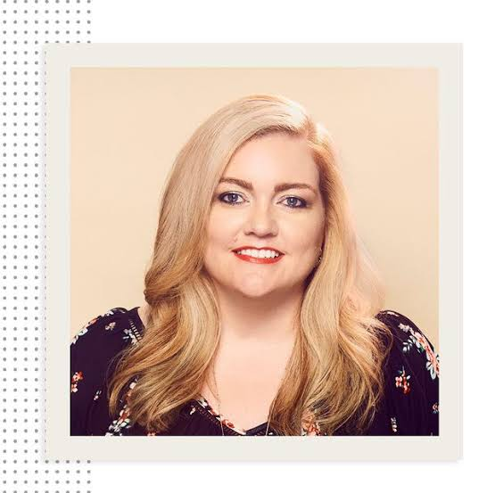

Colleen Hoover
Colleen Hoover is an American author who primarily writes novels in the romance and young adult fiction genres. She is best known for her 2016 romance novel It Ends with Us. Many of her works were self-published before being picked up by a publishing house.